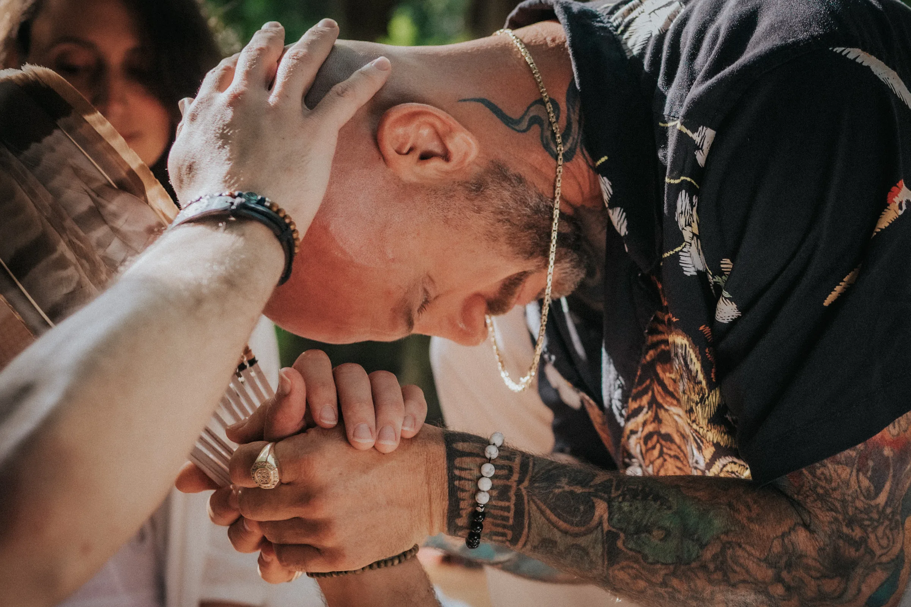
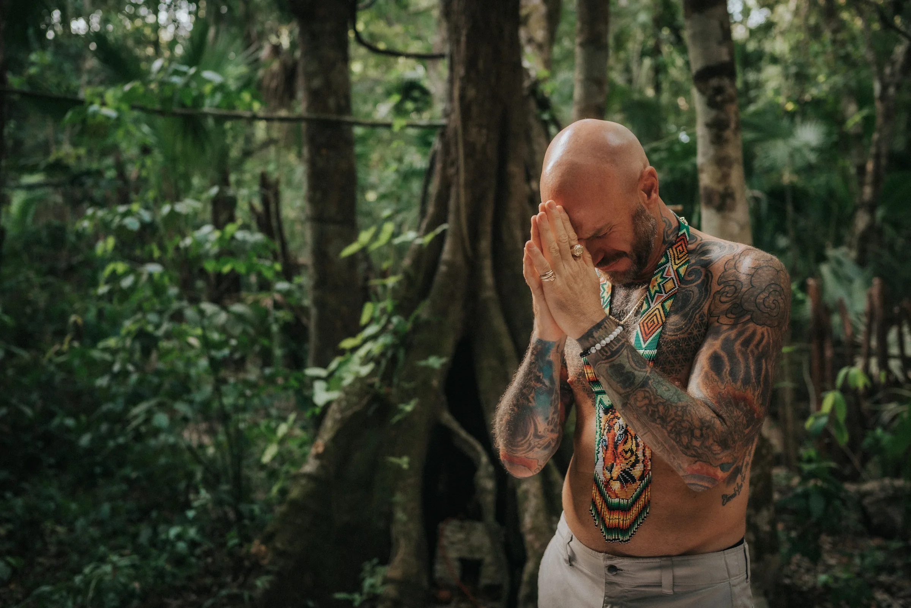
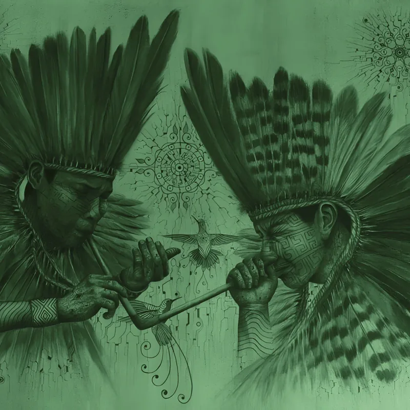

What's Coming Up
Every training, program, and ceremony on the calendar — with dates, locations, and how to apply, all in one place.
Discover →

Illuminating the Way
Born from the depths of healing — a path for the whole person: body, mind, and spirit.
The Mission
Tiger Soul Medicine Retreats was born from the depths of my own healing — a path guided by sacred plant medicines and compassionate teachings, woven together to illuminate the way from darkness into light.
The Path
Every soul arrives at a different threshold. Choose the doorway that calls to you — each is held with reverence, safety, and deep intention.
Every training, program, and ceremony on the calendar — with dates, locations, and how to apply, all in one place.
Discover →Step into the path of sacred service with rigorous, heart-centered Bufo certification for the next generation of facilitators.
Discover →A nine-week guided journey — mostly online, built around one week together in person: four weeks of preparation, the retreat, then four weeks of integration.
Discover →The medicines themselves — Bufo, Kambo, and Rapéh. Ancient allies, each with its own spirit, held with the care they ask for.
Discover →Sacred Medicine
Ancient allies, each held with the reverence they deserve — guided by trained facilitators in a container of safety and love.

The medicine of the gods — known for profound emotional release, spiritual awakening, and a deep connection to the divine.
Discover →An ancient Amazonian medicine that cleanses body, mind, and spirit — deep detoxification and spiritual renewal.
Discover →
The sacred mushrooms — slower, gentler work. Emotional insight, forgiveness, and a softer view of old wounds.
Discover →
A sacred Amazonian snuff — grounding, clearing, and centering. Woven into ceremony as a tool for deep presence and prayer.
Discover →Blaine, with all his experience and care, guided me through the most amazing journey of my life. My life is completely changed for good and I will never forget that day in Tulum.
My experience with bufo medicine was the catalyst for my deep healing to begin. The way Blaine holds the space so beautifully for you to feel safe and loved.
Right after I used the medicine I went through an ego death and emerged into pure bliss, ecstasy, and pure love. The freedom and release I gained from that journey is still with me today.
I would call Blaine a supportive magician the way he is leading a ceremony. I believe Bufo can change the world in a good way.
Begin
Join our circle for retreat announcements, wellness offerings, and reflections from the medicine path. Your soul already knows the way.